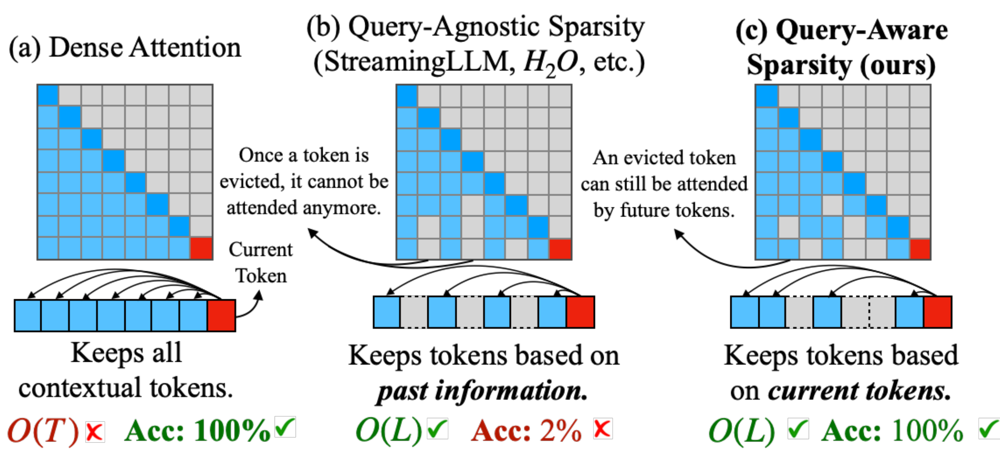
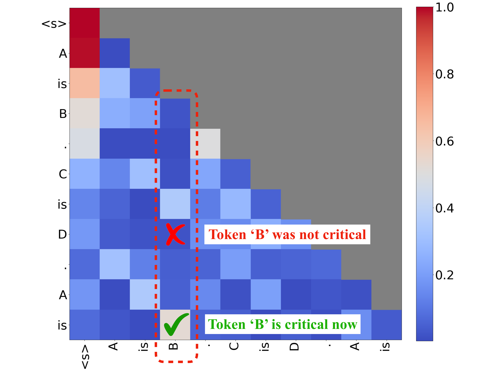
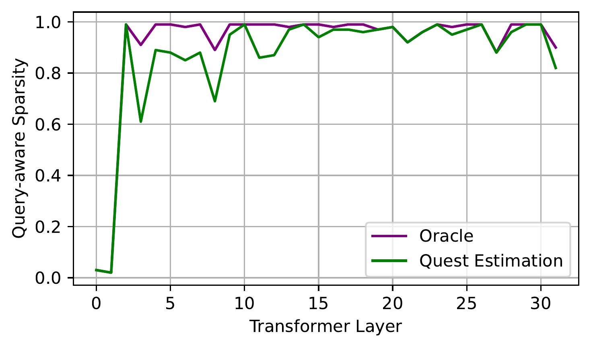
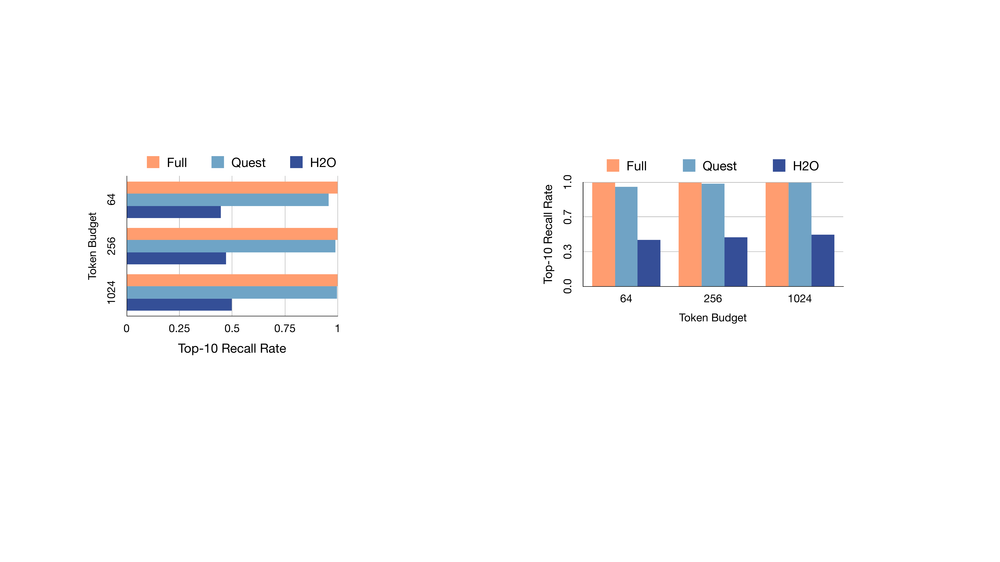
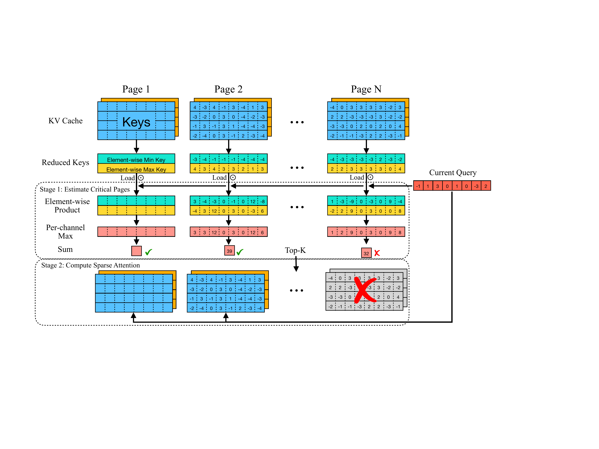
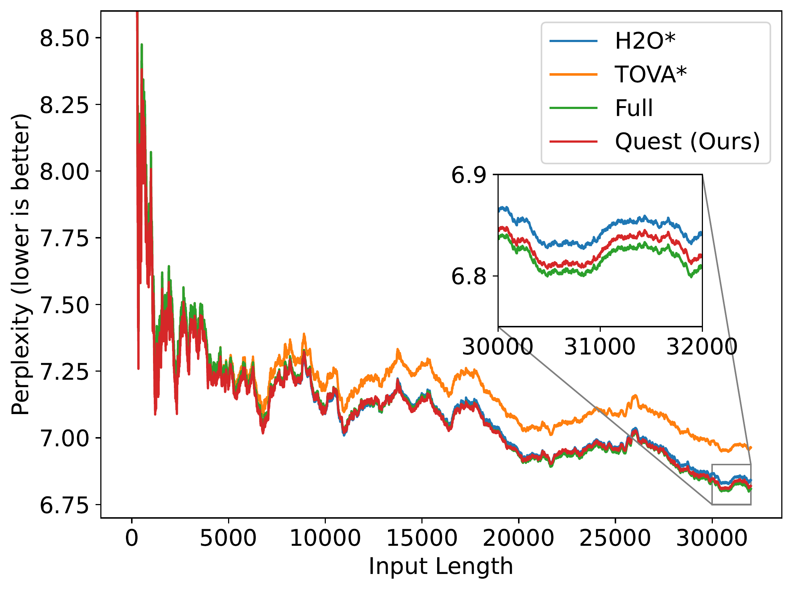
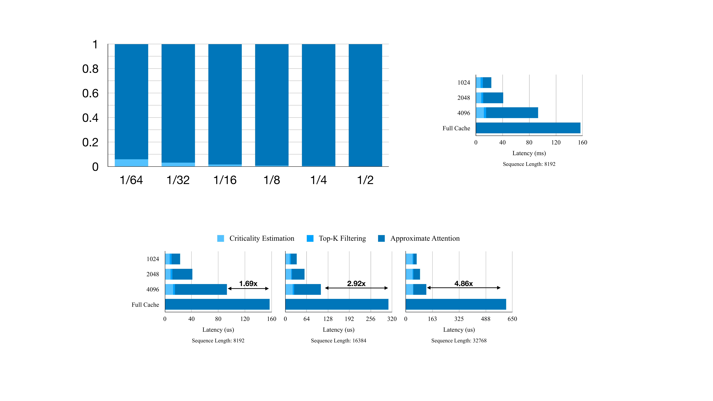
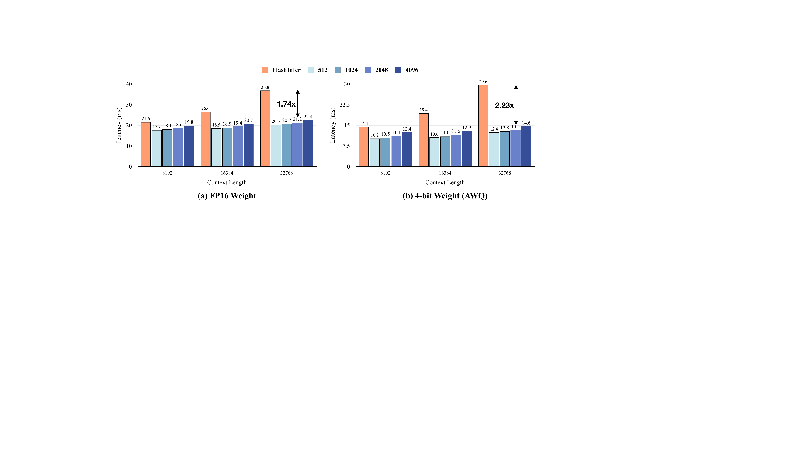
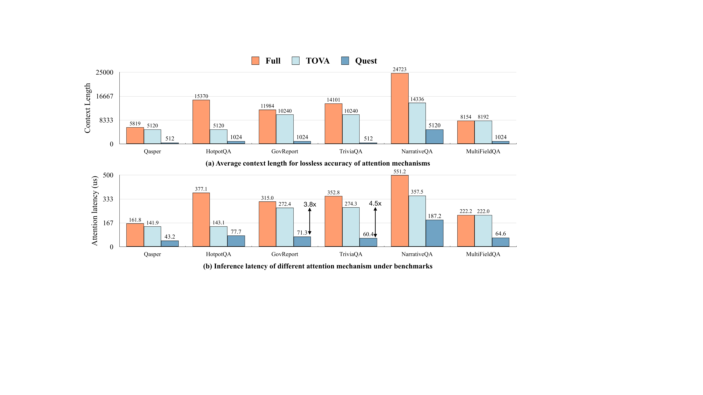

Quest: Query-Aware Sparsity for Efficient Long-Context LLM Inference
一、论文摘要
随着对长上下文大型语言模型（LLMs）需求的增加，上下文窗口高达128K甚至1M token的模型变得越来越普遍。然而，长上下文LLM推理具有挑战性，因为推理速度随着序列长度增加而显著下降。这种减速主要是由于在自注意力过程中需要加载大量KV缓存所致。之前的研究表明，少量关键token会主导注意力结果。然而，我们观察到token的关键性高度依赖于查询（query）。为此，我们提出了Quest，一种基于查询的KV缓存选择算法。Quest跟踪KV缓存页面中的最小和最大值，并使用查询向量来估计每个页面的关键性。通过只为注意力加载Top-K个关键的KV缓存页面，Quest在不影响准确性的情况下显著加速了自注意力。我们展示了Quest可以实现高达**倍的自注意力加速，同时在处理长依赖任务时保持较低的精度损失。代码可在 https://github.com/mit-han-lab/Quest 获取。
二、基本信息
| 属性 | 内容 |
|---|---|
| 论文 ID | 2406.10774 |
| 标题 | Quest: Query-Aware Sparsity for Efficient Long-Context LLM Inference |
| 作者 | Jiaming Tang, Yilong Zhao, Kan Zhu, Guangxuan Xiao, Baris Kasikci, Song Han |
| 单位 | 上海交通大学 (SJTU), MIT, 华盛顿大学 (UW), NVIDIA |
| 会议/期刊 | ICML 2024 |
| 原文保存位置 | ~/.openclaw/workspace/papers/20260311_Quest/source/ |
| 报告生成日期 | 2026-03-11 |
三、论文主体分析
1. 引言 (Introduction)
大型语言模型的快速演变已经深刻影响了我们的日常生活。随着对多轮对话和长文档查询需求的增加，LLMs的最大上下文长度已经从2K急剧增长到1M。128K上下文长度的GPT-4模型已经大规模部署，相当于300页文本。
然而，处理长上下文请求具有挑战性。由于LLMs的自回归性质，生成一个token需要读取整个KV缓存。对于32K上下文长度的Llama 7B模型，KV缓存可以占用16GB空间，需要至少11ms来读取，这贡献了超过50%的推理延迟，限制了整体吞吐量。
尽管KV缓存越来越大，之前的研究表明少量关键token可以主导token生成的准确性。因此，我们可以通过只加载关键token来显著减少推理延迟，同时保持准确性。因此，识别KV缓存的关键部分变得至关重要。

图1：Quest框架概览。展示了查询感知的长上下文LLM推理加速框架的整体架构。
:::
在本文中，我们进一步观察到token的关键性会随着不同的查询token而改变。如图2所示，不同查询的关键token差异很大。因此，我们需要一种动态高效的方法来确定需要关注KV缓存的哪个部分。为此，我们提出了Quest，这是一种用于长上下文LLM推理的查询感知关键性估计算法，能够有效识别关键的KV缓存token并有选择性地对选定token执行自注意力。
为了减少KV缓存关键性估计的开销，Quest以页面粒度管理KV缓存。对于每个页面，Quest利用Key向量每个特征维度的最大值和最小值作为元数据来表示token信息。在推理过程中，Quest同时考虑Query向量和元数据来估计每个页面的关键性。根据所有页面的关键性分数，Quest选择Top-K页面来执行近似自注意力，其中K是一个预设常数（如128、256）。通过将内存移动从整个KV缓存减少到元数据和常数K个页面，Quest显著加速了推理。

图2：查询感知稀疏性分析。展示不同查询下token的关键性差异。
:::
我们在准确性和效率上评估Quest。由于Quest动态决定token的关键性，对于给定的KV缓存稀疏度，Quest在PG19数据集、passkey检索任务和LongBench上比基线方法实现了更好的准确性。对于32K上下文，Quest相比FlashInfer实现了自注意力延迟降低。我们的端到端框架表明，与使用4位权重量化的FlashInfer相比，Quest可以实现推理加速。总结起来，我们做出以下贡献：
- 对自注意力机制的分析，揭示了查询感知稀疏性的重要性
- Quest，一种高效准确的KV缓存加速算法，通过专门的操作符设计和实现利用查询感知稀疏性
- 对Quest的全面评估，展示了高达自注意力延迟降低和端到端延迟改进
2. 相关工作 (Related Work)
2.1 长上下文模型
随着对长上下文模型需求的增加，许多工作专注于扩展LLMs的上下文窗口。目前，许多模型使用旋转位置嵌入（RoPE），通过不同缩放方法结合微调，原始4K Llama-2的窗口已扩展为LongChat的32K和Yarn-Llama-2的128K。通过长度外推，模型的上下文窗口超过了1M。除了开源模型，GPT-4 Turbo支持高达128K的长度，而Claude-2支持高达200K。随着模型越来越能够处理长输入，这对推理效率提出了挑战。Quest旨在通过利用查询感知的KV缓存稀疏性来提升长上下文推理。
2.2 KV缓存驱逐算法
对于长上下文LLM推理和服务场景，KV缓存的巨大大小导致显著的时间和空间开销。许多先前的工作致力于压缩KV缓存的大小以加速注意力并减少内存使用。H2O根据历史注意力分数的总和保留有限的重要KV缓存预算。FastGen进一步改进了token类型，对保留KV缓存应用更复杂的策略。TOVA通过仅根据当前查询决定哪些token被永久丢弃来简化策略。StreamingLLM使用注意力sink和有限KV缓存处理无限长的文本。这些方法根据历史信息或当前状态决定丢弃KV缓存的哪些部分，但丢弃的token可能对未来的token很重要，可能导致重要信息丢失。为了缓解这个问题，SparQ通过通道剪枝计算近似注意力分数并通过它们选择重要token。然而，这种方法在长依赖任务上尚未得到广泛验证，通道级稀疏性可能对实际加速带来挑战。因此，我们提出了Quest，它保留所有KV缓存并根据当前查询选择部分KV缓存，以加速长上下文自注意力而不导致精度下降。
3. 方法论 (Methodology)
在本节中，我们首先通过分析推理成本和自注意力特性来激励Quest。然后我们展示Quest的设计并讨论其优势。
3.1 长上下文推理成本高
LLM推理包含两个阶段，即预填充阶段和解码阶段。在预填充阶段，所有输入token被转换为嵌入并生成Key（K）、Query（Q）和Value（V）向量。Key和Value向量都保存在KV缓存中供将来使用。预填充阶段的其余部分包括自注意力层和前馈网络（FFN）层，产生第一个响应token。

图3：自注意力稀疏性直觉。展示前两层之外只需要不到10%的token即可达到类似的精度。
:::
在解码阶段，模型将使用最后生成的token来计算其K、Q、V。模型使用Q与之前所有token的K相乘来生成注意力权重。注意力权重将使用softmax归一化，其中每个值$a_i$表示第i个token与当前token之间的注意力分数。自注意力层将输出$\sum a_i \cdot V_i$并发送到FFN。
对于一个请求，预填充阶段只发生一次，而解码过程需要为响应中的每个token执行。因此，解码阶段主导推理时间。例如，对于16K token提示和512 token响应，超过86%的时间花在解码阶段。因此，解码阶段性能对整体延迟至关重要。
此外，长上下文场景显著减慢了解码阶段。在每个解码阶段，必须加载现有token的K和V来执行自注意力，对于Llama-7b的32K上下文，这很容易达到16GB。这个内存加载操作在解码阶段可以占用53%的时间。因此，优化自注意力对于高效的长上下文推理变得必不可少。

图4：Recall率分析。展示不同方法在文本生成过程中Top-10注意力分数token的平均recall率。
:::
3.2 自注意力操作具有高度稀疏性
幸运的是，先前的研究强调了自注意力固有的稀疏性。由于自注意力的这个特性，KV缓存中的一小部分token（称为关键token）可以积累足够的注意力分数，捕获最重要的token间关系。例如，如图3所示，除了前两层外，只需要不到10%的token就能达到类似的精度，这使得对其余token的注意力变得不必要。因此，如果我们能够估计token的关键性，我们就可以只在关键的KV缓存token上计算自注意力，从而大大减少内存移动并提高效率。
3.3 关键Token依赖于Query
然而，token的关键性是动态的，并且高度依赖于查询向量Q。假设提示是"A is B. C is D. A is"，我们在Llama-2-7b的第16层的某个头中展示注意力图。由于这里的输出答案应该是"B"，token"B"对于当前查询"is"至关重要。因此，它具有很高的注意力分数。然而，在最终token"is"之前，"B"对于任何之前的查询都不关键，注意力分数非常低。换句话说，token的关键性与查询token密切相关。
我们通过分析文本生成过程中Top-10注意力分数token的平均recall率来量化这种效果。使用完整KV缓存的原始注意力可以保持100%的recall率。然而，像H2O这样基于历史信息剪枝token的KV缓存驱逐算法，由于关键token在前面的迭代中被剪枝，recall率很低。如图4所示，Quest保持接近完整注意力的recall率，因为它基于当前查询估计关键token。因此，预确定关键性是具有挑战性的，这促使我们通过考虑Q向量来进行查询感知的稀疏性估计。

图5：Quest工作流程。展示动态token关键性估计和Top-K页面选择的过程。
:::
3.4 动态估计Token关键性
为了高效准确地估计KV缓存token的关键性，我们提出Quest，一种利用查询感知上下文稀疏性的高效准确算法，它近似地为当前查询选择最可能关键的KV缓存页面。我们在图5中展示Quest的工作流程。为了管理开销，Quest采用PageAttention并以页面粒度选择KV缓存。
为了估计页面的关键性，Quest在原始注意力操作之前执行注意力权重的近似计算，如算法1所示。
我们的见解是，为了不遗漏关键token，我们应该选择包含最高注意力权重token的页面。然而，为了高效选择页面，我们应该根据这个见解计算近似注意力分数。我们发现，页面内注意力权重的上限可以用来近似页面中的最高注意力。注意力权重的上限可以通过Key向量的逐通道最小值（$m_i$）和最大值（$M_i$）来计算。给定一个Q向量，Quest通过取$U_i = \max(Q_i m_i, Q_i M_i)$来计算通道i的最大可能值。注意，无论$Q_i$的符号如何，$U_i$始终大于该页面中所有token的$Q_i$与Key值$K_i$的乘积。因此，当我们累加$U_i$时，我们得到该页面所有Key向量的注意力权重上限。
在推导注意力权重的上限后，我们选择Top-K页面作为关键页面，其中K是一个任意定义的超参数。为了展示Quest的可行性，我们执行实际的自注意力并收集每页的Top-K注意力分数。如图3所示，我们的查询感知稀疏性与oracle稀疏性基本一致。Quest只在选中的页面上执行正常的自注意力，这大大减少了内存移动。我们将选中页面中的token数量定义为"Token Budget"。
由于前两层的稀疏比很低（如图3所示），我们只将Quest和所有基线方法应用于后面的层，以更好地保持模型准确性。是否跳过前两层与KV缓存选择算法是正交的。
算法1：Token关键性估计
当向KV缓存插入新token时：
输入：Key向量K，隐藏层维度dim，当前最大值向量M_i，当前最小值向量m_i
对于i=1到dim：
M_i = max(M_i, k_i)
m_i = min(m_i, k_i)
当执行自注意力时：
输入：Query向量Q，隐藏层维度dim，当前最大值向量M_i，当前最小值向量m_i
初始化score = 0
对于i=1到dim：
score += MAX(q_i * M_i, q_i * m_i)
3.5 Quest减少自注意力的内存移动
Quest不需要加载整个KV缓存，而只需要加载一部分数据，这利用了查询感知的稀疏性。假设每个K或V向量是M字节，KV缓存包含L个token，每个页面包含S个KV对（Page size）。在关键性估计期间，Quest将加载每个页面的最大值和最小值向量，这大约是2ML/S字节。此外，Quest对Top-K页面执行正常的自注意力，这是2MKS字节。整个KV缓存是2ML字节，这表明Quest加载了总KV缓存的1/S + K*S/L，这等价于：
$$\frac{1}{\text{Page Size}} + \frac{K}{\text{Page Num}}$$假设我们每页使用16个KV对，上下文长度是64K，我们选择Top-4K页面，Quest将减少8倍的内存加载。请注意，这种内存加载减少是通用的，适用于所有模型，并且与现有的量化机制兼容。
4. 实验 (Experiments)
4.1 设置
我们在语言建模数据集PG19、passkey检索任务和LongBench中的六个数据集上评估Quest：NarrativeQA、HotpotQA、Qasper、TriviaQA、GovReport、MultifieldQA。我们选择两个广泛使用的长上下文模型进行评估：LongChat-v1.5-7b-32k和Yarn-Llama-2-7b-128k。我们将我们的方法与KV缓存驱逐算法H2O、TOVA和StreamingLLM进行比较。请注意，我们不将Quest和其他基线算法应用于模型的前两层，因为我们在第3.4节的分析表明这些层的稀疏比很低。
4.2 准确性评估
PG19上的语言建模
我们首先在PG19测试集上评估语言建模困惑度，这是一个包含100本书、平均长度70K token的数据集。我们使用LongChat-7b-v1.5-32k模型在PG19上测试32K token。我们向模型输入不同数量的token并评估生成token的困惑度。我们用4096个token的预算评估H2O、TOVA和Quest，这大约是总token长度的1/8。如图6所示，Quest的准确性接近使用完整KV缓存的oracle基线。

图6：PG19困惑度结果。展示不同token预算下的困惑度比较。
:::
长文本passkey检索任务结果
由于语言建模评估只涉及局部依赖，模型可以通过关注最近的token来获得良好的性能。然而，处理长距离依赖的能力对于长文本推理至关重要。对于像H2O和TOVA这样的KV缓存驱逐算法，可能会丢弃对遥远未来token重要的KV缓存部分，从而阻止模型获得正确答案。
为了展示Quest有助于保持模型处理长依赖任务的能力，我们在Yarn的passkey检索任务上评估它。这个任务衡量模型从大量无意义文本中检索简单passkey的能力。我们将答案放在文本的不同深度比例处，并评估模型是否可以使用不同的KV缓存token预算正确检索答案。我们在10K token测试上评估LongChat-7b-v1.5-32k，在100K token测试上评估Yarn-Llama-2-7b-128k。
对于passkey检索测试，我们直接向模型预填充包含passkey和文本的输入文本。然而，为了评估不同方法对模型处理长依赖任务能力的影响，我们通过逐token地向模型输入任务的问题和指令来模拟解码。在这种情况下，H2O和TOVA可能会错误地丢弃对未来token关键的内容，比如稍后会被查询的passkey。类似地，StreamingLLM只能关注最近的文本窗口，如果passkey出现在这个窗口之外，它无法提供正确答案。因此，H2O、TOVA和StreamingLLM在10K和100K长度passkey检索测试中无法达到理想的准确性。然而，Quest不会丢弃KV缓存，而是使用查询感知方法来识别关键token。如表1所示，Quest在10K和100K序列长度测试中都能以最小的预算达到完美的准确性。
表1：Passkey检索任务结果。展示不同方法在不同序列长度下的准确率。
:::
LongBench结果
为了验证Quest在一般长上下文数据集上优于基线，我们在LongBench的六个数据集上评估我们的方法和基线。我们在整个广泛的长上下文数据集范围内评估LongChat-7b-v1.5-32k，包括单文档QA：NarrativeQA、Qasper、MultiFieldQA；多文档QA：HotpotQA；摘要：GovReport；少样本学习：TriviaQA。我们用不同的KV缓存预算评估H2O、TOVA、StreamingLLM和Quest。对于所有数据集，我们将输入分为材料和问题/指令。对于材料部分，我们使用完整KV缓存的Flash-Attention执行推理。对于问题部分，我们通过逐token地向模型输入来模拟解码。类似于passkey检索测试，为了使H2O能够使用Flash-Attention，我们无法在上下文阶段收集H2O的历史注意力分数，因此从解码阶段开始。

图7：LongBench结果。展示六个数据集上不同方法的性能比较。
:::
如图7所示，Quest在具有各种KV缓存预算的六个长上下文数据集上始终优于所有基线。Quest使用1K token的预算可以实现与完整KV缓存的模型相当的性能，而其他基线即使使用更大的预算与完整缓存性能仍有明显差距。考虑到前两层使用的完整缓存，Quest可以在Qasper、HotpotQA、GovReport、TriviaQA、NarrativeQA和MultifieldQA上分别实现1/6、1/6、1/5、1/10、1/5和1/6的KV缓存稀疏度下实现无损性能。这表明Quest能够保持模型在不同类型长上下文任务中的能力，因为它不会因为不当丢弃KV缓存而导致错误答案的产生。
4.3 效率评估
为了展示Quest的可行性，我们基于FlashInfer（一个用于LLM推理的内核库）用专门的CUDA内核实现了整个框架。我们首先在第4.3.1节中在RTX4090上使用CUDA 12.2评估Llama2-7B配置下Quest的内核级效率。此外，我们在第4.3.2节中展示Quest在文本生成中的端到-end加速。我们在同一准确性下定性比较Quest与基线方法在第4.3.3节中的效率。我们在端到端评估中使用Ada 6000 GPU以获得更长的上下文长度。
内核评估
由于LLM推理是内存受限的，Quest的加速与稀疏比成正比（相当于内存移动减少）。我们在图8中量化了这种效果，使用NVIDIA的基准测试工具NVBench评估不同序列长度和页面大小下每个内核的性能。
图8：内核效率评估。展示关键性估计、Top-K过滤和近似注意力的延迟。
:::
关键性估计：我们评估Quest在不同序列长度和页面大小下关键性估计的延迟。在短序列长度下，估计的内存带宽利用率小于FlashInfer，因为总内存加载大小不足以充分利用GPU内存带宽。随着序列长度增加，相对性能提高并接近1/Page Size，因为估计每个页面只消耗一个token。请注意，量化或更大页面大小等技术可以进一步减少额外的内存使用。
Top-K过滤：我们在Quest中启用Top-K，使用来自矢量搜索内核库RAFT的批量Top-K CUDA运算符。我们在不同序列长度和token预算下测试Top-K的延迟。由于关键性估计将整个token减少为一个关键性分数，Top-K与其他运算符相比内存移动有限，因此在小于128K的序列长度下延迟开销较低，为5-10微秒。
近似注意力：由于Quest与PageAttention兼容，近似注意力可以通过将Top-K页面索引作为稀疏加载索引来轻松实现。我们将Quest的近似注意力与FlashInfer在不同序列长度和token预算下、页面大小为16的原始注意力进行比较。在给定的token预算B下，近似注意力的延迟是恒定的，与序列长度无关。由于近似注意力引入的开销很小，它在序列长度B下与FlashInfer具有相似的延迟。
我们进一步评估了Quest在Llama2-7B模型上结合关键性估计、Top-K过滤和近似注意力的注意力机制，使用PyTorch profiler。我们展示了图9中Quest在不同序列长度下的时间分解。Quest在32K序列长度和2048 token预算下相比FlashInfer减少了自注意力时间。

图9：效率时间分解。展示不同序列长度下各组件的时间占比。
:::
端到端评估
为了展示Quest的实际加速，我们将框架部署到实际的单批处理场景中。我们测量在不同序列长度和token预算下解码阶段生成一个token的平均延迟。请注意，我们不测量采样过程，因为它的执行时间较小且取决于设置。我们将Quest与使用FlashInfer实现的完整KV缓存基线进行比较。如图10所示，Quest在所有序列长度上都优于FlashInfer。Quest的延迟增长比FlashInfer慢得多，因为Quest保持类似的token预算。在序列长度32K和token预算2048下，Quest使用FP16权重提升推理速度1.74倍，使用4位量化权重提升2.23倍。

图10：端到端延迟评估。展示不同序列长度下的推理延迟比较。
:::
与基线比较
为了展示Quest的性能改进，我们在相同准确性约束下（即LongBench六个任务的无损准确性）比较不同注意力机制的推理效率。我们在图11中展示不同注意力机制达到无损准确性目标所需的token预算。例如，NarrativeQA的平均上下文长度为24K token。为了达到无损准确性，TOVA需要14K的token预算，而Quest只需要5K token，导致更高的稀疏度。
然而，没有一个基线包含其提出方法的内核实现。因此，我们通过利用FlashInfer的推理延迟对基线的自注意力效率进行定性分析，忽略其他运行时开销（如TOVA需要计算历史分数的要求）。相比之下，Quest在考虑所有运算符的实用设置中进行评估。如图11所示，Quest由于高查询感知稀疏性，在自注意力延迟方面显著超越所有基线。对于GovReport和TriviaQA，Quest分别提升了3.82倍和4.54倍的推理速度。因此，Quest在保持更高准确性的同时能够实现更高的效率。

图11：与基线比较。(a)达到无损准确性所需的token预算；(b)自注意力延迟比较。
:::
5. 结论 (Conclusion)
我们提出了Quest，一种利用查询感知稀疏性的高效准确的KV缓存选择算法。Quest根据每页元数据和当前查询动态估计KV缓存中token的关键性。然后，它只在关键token上执行自注意力，大大减少了内存移动，提供高稀疏度而不会造成明显的精度损失。全面评估表明，Quest提供高达自注意力加速，这贡献了解码阶段端到端延迟降低。与之前的基线方法相比，Quest在长上下文基准测试中在相同准确性目标下将自注意力延迟降低了高达4.5倍。
四、论文简评
创新点
查询感知稀疏性：论文的核心创新在于发现token的关键性依赖于查询向量，这是一个重要的观察。之前的KV缓存管理方法（如H2O、TOVA、StreamingLLM）都是基于历史信息或静态策略，而Quest通过Query向量动态估计每个页面的关键性，开创了查询感知稀疏性的新范式。
高效的元数据设计：通过使用每个Key向量的通道级最小值和最大值作为页面的紧凑表示，Quest能够在只加载很少元数据的情况下快速估计页面重要性，实现了计算开销和内存移动的平衡。
系统级优化：论文不仅提出了算法，还提供了完整的CUDA内核实现，基于FlashInfer构建，展示了从算法到实际系统的完整优化路径。
局限性
前两层不适用：由于前两层的稀疏性较低，Quest选择跳过这两层，这意味着在这些层仍然需要加载完整的KV缓存，对于某些极端长度的场景这可能成为瓶颈。
超参数敏感性：Top-K的选择需要人工设定，不同的任务可能需要不同的token预算来达到最佳性能。
近似估计的精度：使用上下界来近似注意力分数是一种保守策略，可能导致选择不够精确，在某些边界情况下可能遗漏真正的关键token。
应用场景
长文档问答系统：对于需要处理长文档（如法律合同、技术文档）的问答系统，Quest可以显著降低推理延迟。
长对话系统：在多轮对话场景中，上下文会不断增长，Quest可以帮助保持响应速度。
长文本摘要：处理长篇文章进行摘要时，Quest的加速效果可以帮助实现实时或近实时的摘要生成。
可改进方向
更精细的粒度：当前使用页面作为粒度，未来可以探索更细粒度的token级别选择，甚至可以结合通道级别的稀疏性。
自适应预算：可以研究根据内容动态调整token预算，而非使用固定值。
与其他技术结合：可以探索与量化、剪枝等其它推理优化技术的协同应用。
多查询场景：当前设计针对单查询优化，未来可以研究批处理场景下的优化策略。